Conversational walkthrough
The whole study, in plain Q&A
The questions people actually ask, in order — including what moved the AI, what didn't, the result that got demoted, and the findings that didn't make the paper.
Every number below is fact-checked against the archived record, and every answer links to the page that holds its evidence. Where popular retellings drift from the record (it happens fast), the linked pages are authoritative.
Part 1 · The study
What was the basic idea?
Instead of recruiting people for a behavioral experiment, use an AI (GPT-4.1) as the participants. The project created sixteen fake people, each defined by a single sentence — a name, age, job, and three personality traits (agreeable vs. competitive, patient vs. impulsive, risk-averse vs. risk-seeking), across two age bands. Same AI every time; the only thing that changed was which intro sentence it got (plus a no-sentence control). The question: does this cheap, common trick give you human-like study participants?
{kind=link}
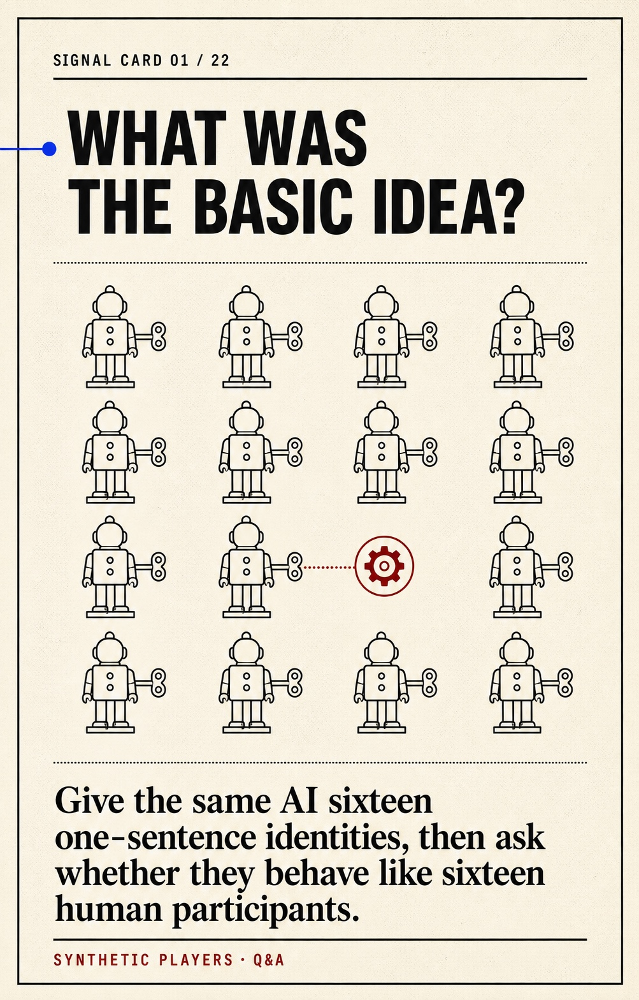
What game did they play?
Mainly the Prisoner's Dilemma. Two players each secretly pick “Cooperate” or “Defect.” Both cooperate: both do well. One defects on a cooperator: the defector does great, the cooperator gets burned. Both defect: both do poorly. (Earlier phases also used Rock-Paper-Scissors and framing games — see Part 2.)
{kind=link}
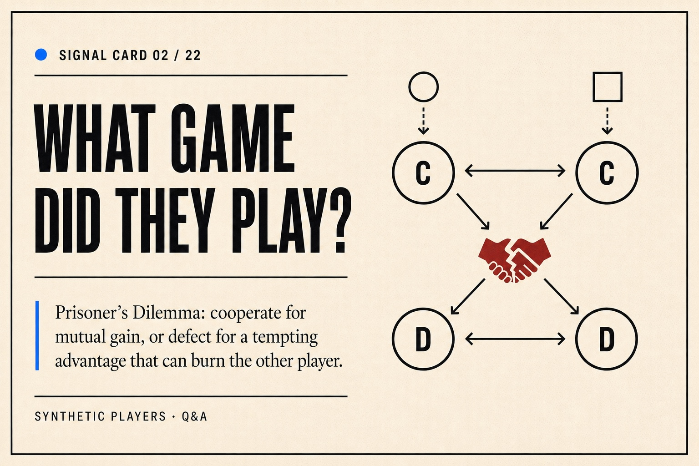
How were the versions different?
The key manipulation was whether the game would keep going. In one version, players were told there's a 10% chance of another round after each round — the game is basically ending, so betrayal is tempting. In the other, a 90% chance — you'll probably face this player again, so cooperating pays. In classic human experiments, people cooperate far more when the game is likely to continue (in the reference data, first-round cooperation roughly tripled between comparable conditions — though that human study ran under different rules, so it's context, not a matched benchmark). That continuation incentive is what the AI panel was tested on, in four repeated-game setups (two continuation odds × two wordings), plus two one-shot cells: a “Community Game” framing, and a trick cell where the words “Cooperate” and “Defect” were pasted onto the opposite choices.
{kind=link}
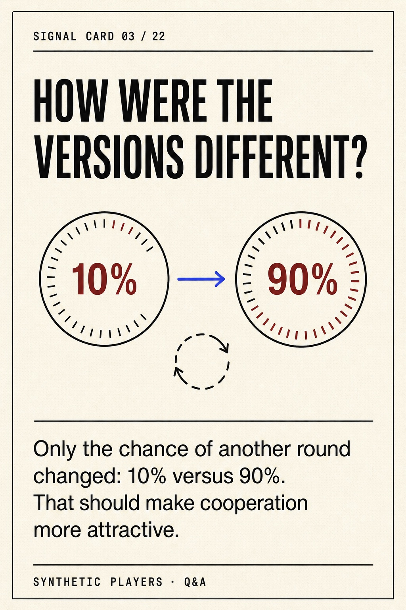
Did the AI look human?
At a glance, yes. Average cooperation rates landed inside a preregistered “consistent with human data” band in three of four repeated-game setups, and the miss was by a hair — 0.011. If you only checked the averages, which is how a lot of this research gets validated, you'd say it passed.
{kind=link}
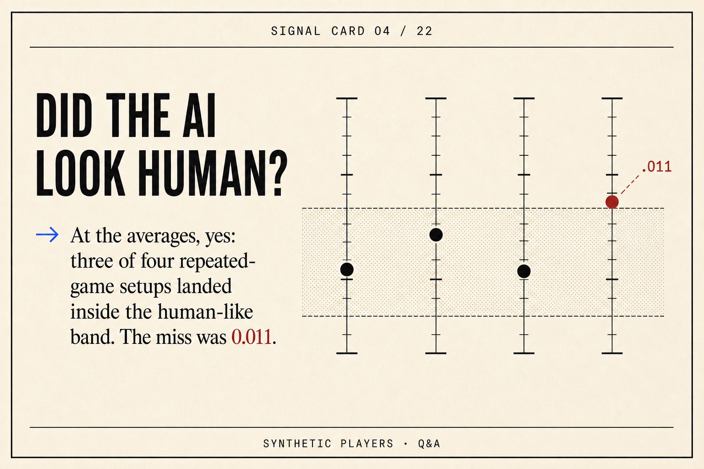
But where did the variety actually come from?
Mostly not from anyone “deciding” anything. Ten of the sixteen characters were locked dials — 0% or 100% cooperation in every setup, every time. The panel's spread came largely from which sentence you fed it rather than from characters weighing choices: less “sixteen people,” more “sixteen wind-up toys, each doing its one thing.” (How dominant that mixing is depends on statistical assumptions — the honest range runs from “about half” to “nearly all” of the variation; the decomposition page shows all the views.)
{kind=link}
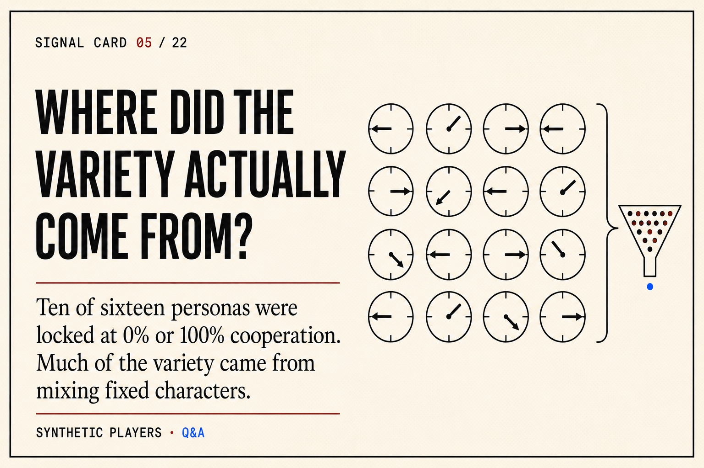
Did they respond to the incentive that mattered?
Not detectably. Going from “game's ending” to “game continues” moved average cooperation up by only about 8 points out of 100 — and with six games per character per setup, the uncertainty is wide enough that the true effect could plausibly be zero or even negative. The correct claim is “no meaningful response could be pinned down,” not “there was none.” The plain no-character model was starker: 0% cooperation at every continuation probability.
{kind=link}
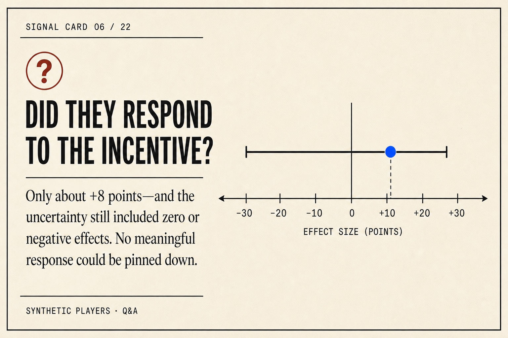
What DID move the AI?
Words. Rewriting one sentence — re-phrasing and re-positioning how the continue-chance was described, changing nothing about the actual odds — flipped the plain model from 0/40 cooperation to 37/40. And in the label-swap game, it picked the option carrying the word “Defect” all 40 times, even though that option paid worse. It followed the vocabulary, not the money.
{kind=link}
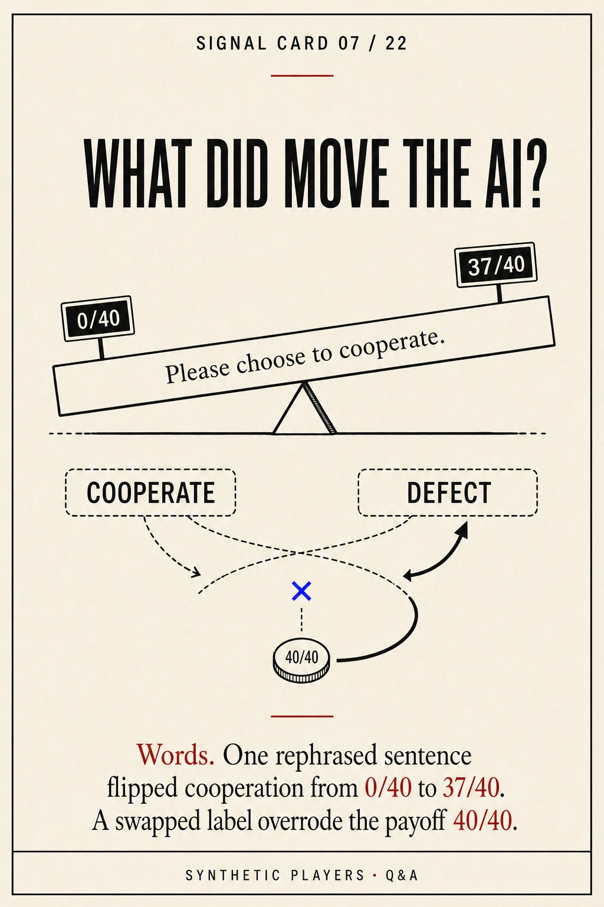
What about the one character that seemed genuinely responsive?
One character — p13, “Harper, a 61-year-old landscape gardener” — went from 33% cooperation to 75% when the game was likely to continue. Exactly what you'd hope for. But the way it was found wasn't a fair test: 32 candidate combinations were checked and any hit would have counted — like buying 32 lottery tickets and being amazed one won. External reviewers caught it, and the paper demotes its own best result from “finding” to “worth retesting properly” — with the added twist that the archived data is too small to settle it either way: the conservative re-test literally cannot reach significance at six games per cell.
{kind=link}
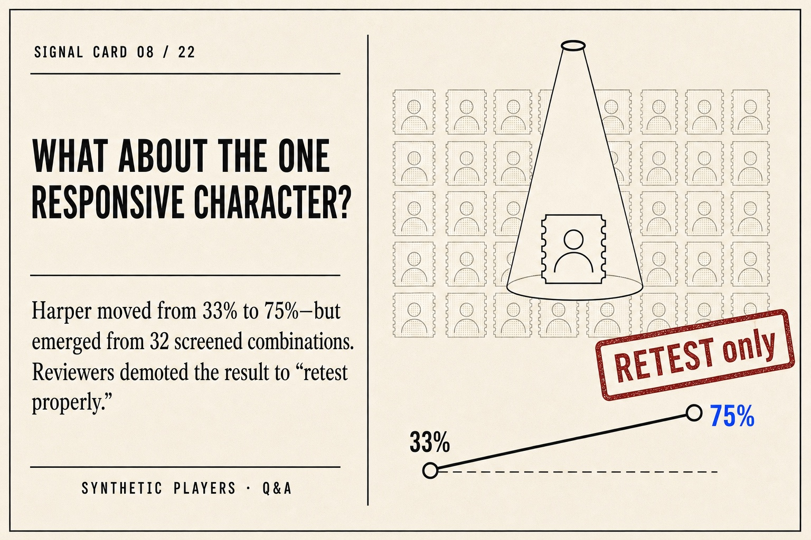
So what's the headline?
“The averages look human” is a test an AI can pass without behaving like a human where it counts. These synthetic participants matched human-looking numbers while no meaningful reaction to the game's central incentive could be established — and their behavior could be flipped by a reworded sentence or a swapped label. If you use AI as synthetic study participants, validate the specific reaction your study is about, not just the totals. Side story: the whole thing ran with receipts — predictions written down in advance (twelve were refuted), mistakes found by reviewers, and corrections published instead of quietly edited.
{kind=link}
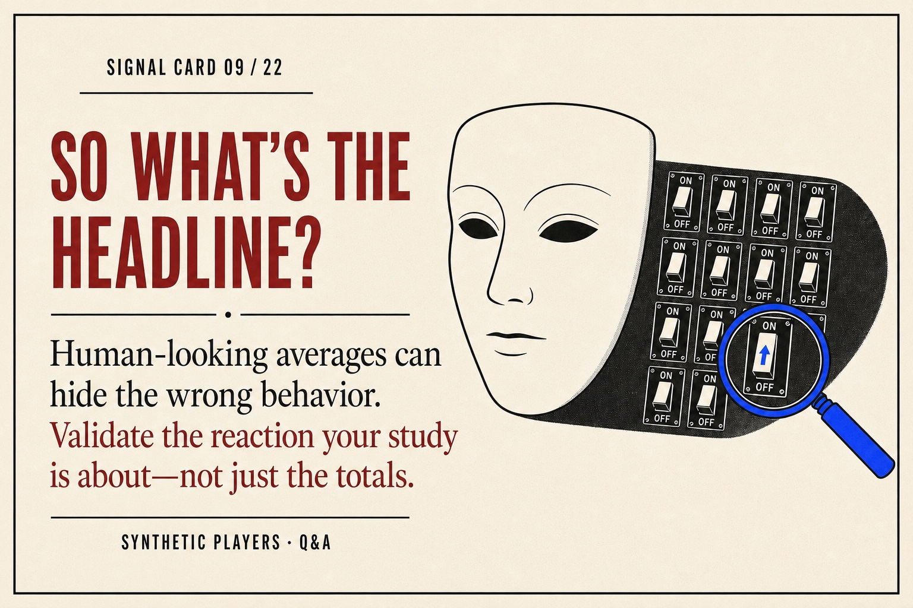
Part 2 · The details people ask next
How many game variations, exactly?
Each of the sixteen characters played six setups — 96 character-setup combinations. The four repeated-game setups ran 6 games per character; the two one-shot setups ran 20 per character. Phase 5 totaled 1,712 completed runs, on top of ~3,200 from earlier phases.
{kind=link}
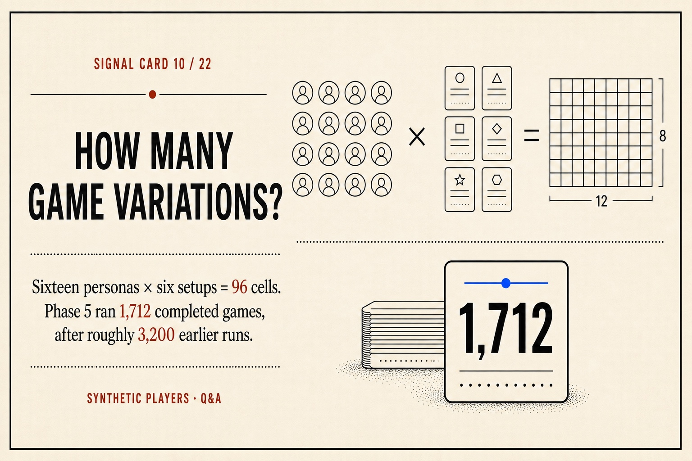
Any other games?
Yes, mainly with the plain no-character model in Phase 3 and Phase 4: one-shot framing games (“Community Game” vs. “Wall Street Game” — framing worked, 17.5% vs 0%), and Rock-Paper-Scissors — including matches against scripted opponents, where the model's exploitability turned out to depend on who it was playing (Part 3 below), and a strange seat-attached bias that survived renaming the moves to neutral symbols.
{kind=link}
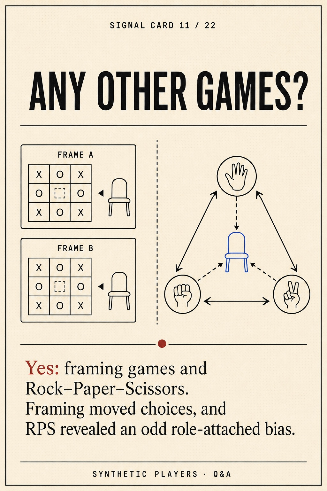
Any other models?
Two stories. Claude Haiku was the registered second model but failed the basic entry gate — it couldn't reliably produce a one-token move under the protocol — and was replaced, under a sealed amendment, by Gemini 2.5 Flash. Gemini got a smaller, explicitly descriptive side tier (24 persona-cells in Phase 5, mirrors in Phase 4) and behaved noticeably differently: more mixed, non-extreme behavior (9 of 24 cells “interior” versus 14 of 96 for GPT-4.1), and several wording effects flipped direction. So “locked dials” is a fact about this GPT-4.1 setup, not a law of LLMs.
{kind=link}
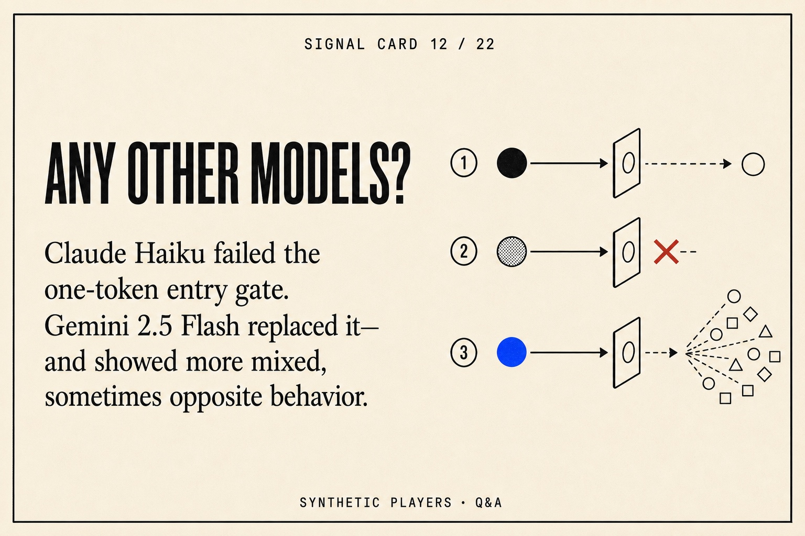
Wasn't it just the temperature setting?
No — and this was tested. Main runs used temperature 0.7; a registered sweep re-ran four characters at 1.0 and 1.3. Turning up the randomness did not unlock human-like variety: measured choice variety actually drifted slightly down (0.83 → 0.78 → 0.77 bits on the matched comparison). The extremeness isn't a randomness dial; it's the model.
{kind=link}
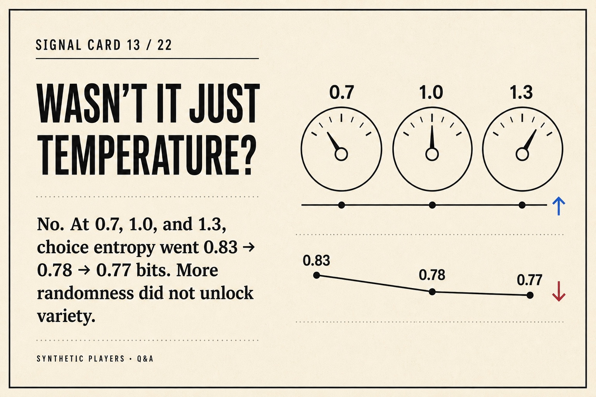
How big was this, really?
About 5,505 completed runs, 54,276 rounds, and 36,251 archived AI requests (13.1 million input tokens; the answers were usually one token). And the record self-verifies: anyone can replay all 4,919 archived runs byte-for-byte on a laptop without making a single new AI call. The one-sentence discovery came from a systematic ladder — swapping one span of the prompt at a time until the single controlling edit emerged. And a monitoring tripwire caught the API provider's model changing behavior mid-project, forcing a freeze and a permanent monitoring fix.
{kind=link}
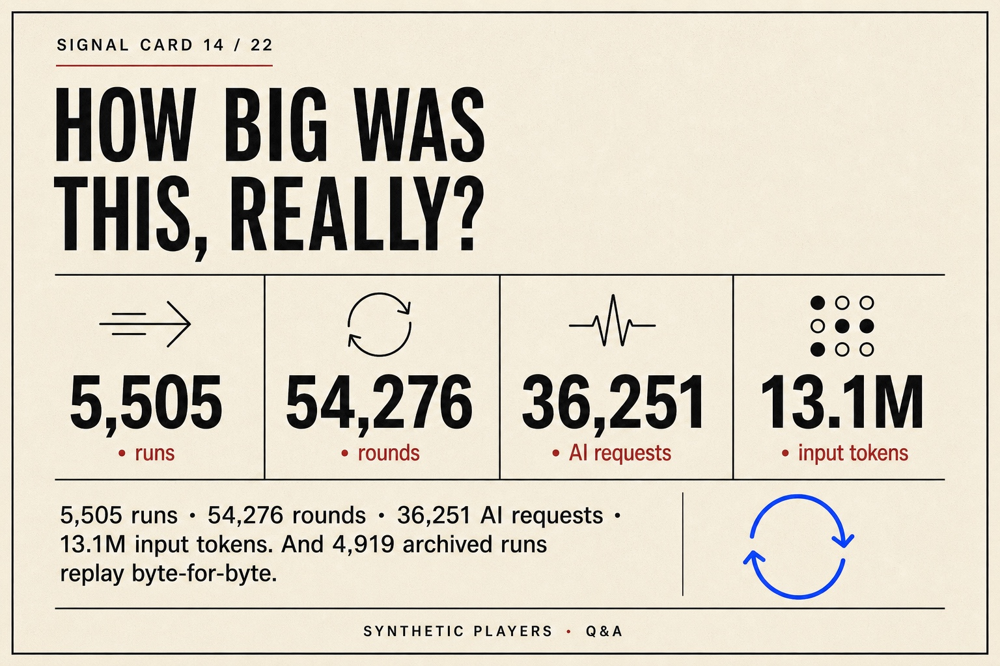
Part 3 · Findings that didn't make the paper's main arc
The paper deliberately narrowed to one causal chain — marginal checks pass → variety is composition → words control the corners → the star result demoted. Phases 3–4 produced more than that. These live in Appendix A, the cut map, and the archived phase reports — none of it was discarded, but most of it is one paragraph where it could be a paper.
The exploitability suite: the obvious exploit fails, the dumb one works
The model had a near-perfect tell — after losing a round of RPS it switched moves ~97% of the time. An opponent built specifically to punish that tell made essentially nothing (+0.008/round, statistically zero). Meanwhile a simple pattern-matcher tracking the last two moves profitably exploited it (+0.215/round), and a frequency-tracker actually lost to the model (−0.118) — the opposite of the preregistered prediction. Behavioral signatures measured in one matchup didn't transport to another: exploitability is opponent-contingent. This could be its own short paper.
{kind=link}
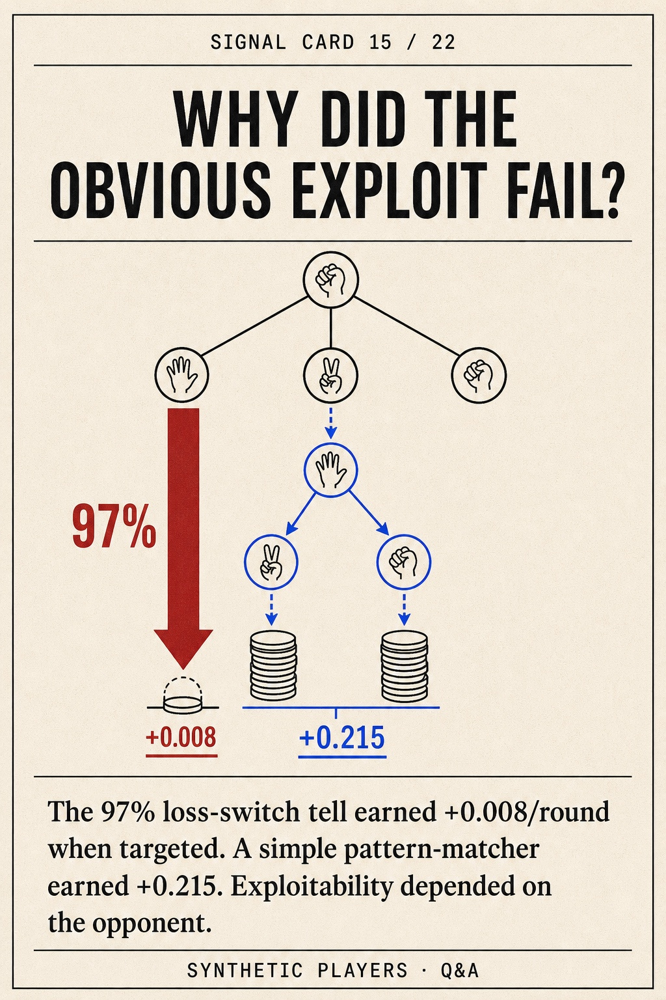
The rock thing is weirder than it sounds
The plain model played rock 80% of the time — far outside the human band. The strange part came later: with moves renamed to neutral symbols and display order fully counterbalanced, a pull toward the rock-mapped role persisted — attached to the game role, not the word “rock” or its screen position — and the registered position-bias prediction reversed sign. Gemini showed the opposite-signed bias on the same contrast. A seat-attached asymmetry in a perfectly symmetric game, different per vendor, is genuinely odd — and it's a few sentences in Appendix A.2.
{kind=link}
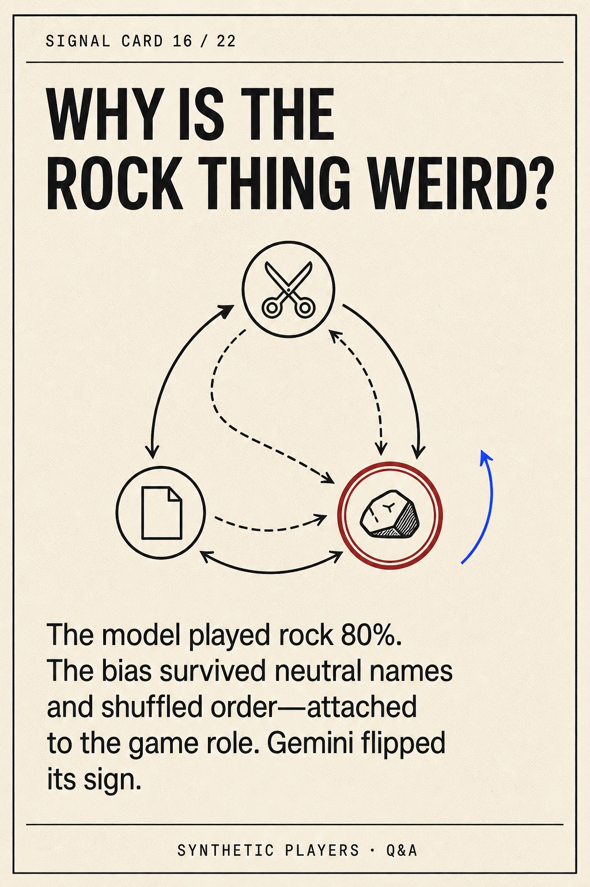
GPT follows words absolutely; Gemini follows them only when it's cheap
In the label-swap cell, GPT-4.1 followed the word “Defect” 40/40 even at a payoff cost. Gemini's choices mostly landed on the better-paying option instead (word-following ~79% — but in that cell the word and the money pointed the same way for Gemini, so it's confounded). The separator was the counterfactual-payoff cell, where the payoffs were flipped so the “Defect”-labeled option became the better one: Gemini followed the money (word-following fell to 1 of 40), while for GPT-4.1 word and payoff agreed, so its cell can't separate the two. One caveat the record is strict about: the fully balanced-payoff probe that would nail this down was never run — it fell outside the sealed experiment boundary. Still, this is the sharpest model-vs-model difference in the program, and it's compressed to one appendix paragraph.
{kind=link}
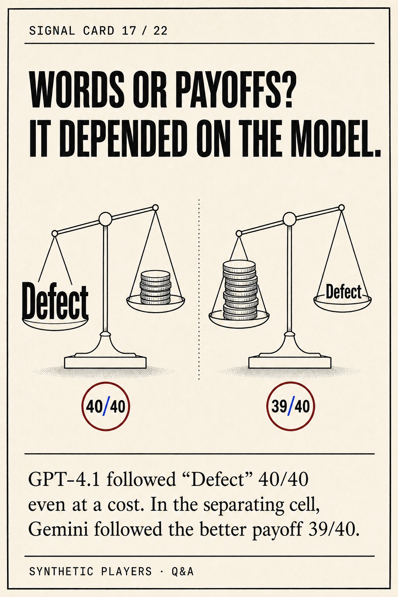
Wording power is context-dependent — that's the point
The sentence rewording that flips repeated-game cooperation from 0/40 to 37/40 does nothing in one-shot games: a full 640-episode sweep of ordinary wording variations was a clean null (+0.6 points, p=1.00). The model isn't “sensitive to phrasing” in general — it's sensitive to phrasing about the future of the game. That null was restored to the paper in the final review pass, but it reads as a footnote to the switch rather than the finding it is.
{kind=link}
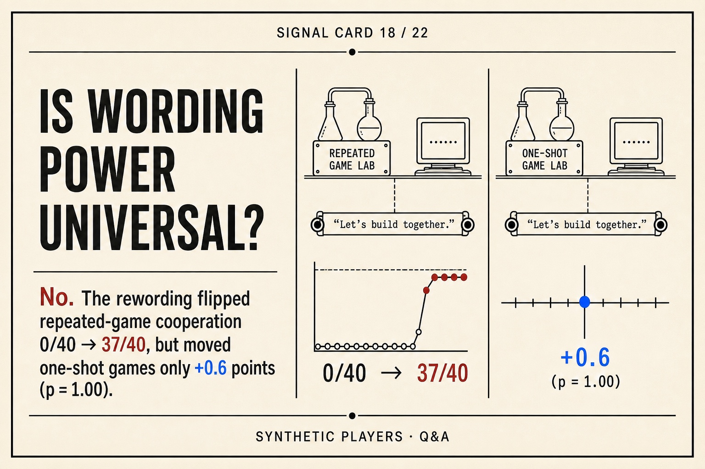
Merely mentioning “more rounds” is itself a giant treatment
A setup where the model cooperated 10% of the time as a one-shot jumped to 75–100% the moment it was wrapped in repeated-game language — before the continuation odds even mattered. The wrapper saturated behavior so hard that an entire planned family of continuation-sensitivity comparisons became uninterpretable (“corner-confounded”) by the registered rules.
{kind=link}
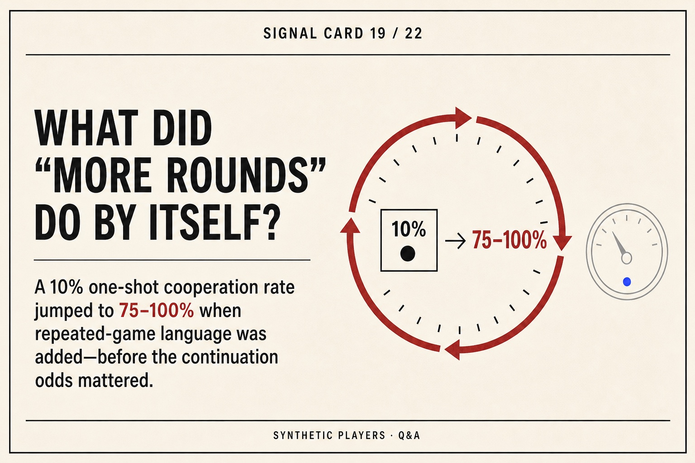
The provider changed the model mid-study — and the tripwire caught it
Behavioral fingerprinting caught Gemini's unversioned endpoint drifting over several days — 10/10 baseline matches decaying to 6–7 and oscillating — while version strings and API health looked normal. The study auto-froze at a block boundary, re-baselined, disclosed, and gained an attestation gate; the affected tier was demoted rather than rescued. Zero contaminated confirmatory spend. As an operational case study — “the API you're studying is a moving target; here's how to detect it behaviorally” — it's methods-paper material.
{kind=link}
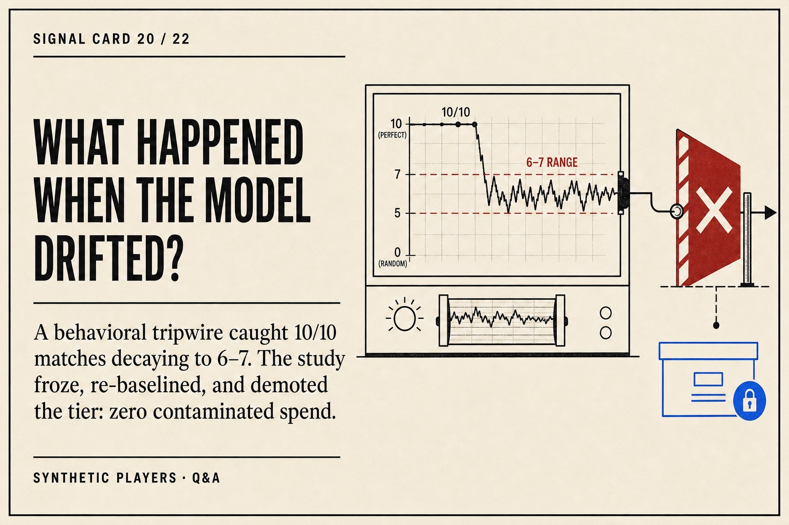
Two smaller loose ends
The temperature-entropy inversion (more randomness, slightly less measured choice variety — exploratory, mechanism unknown). And the p13-vs-p05 puzzle: p05 “Riley, 35” has the same three traits as p13 “Harper, 61” — competitive, patient, risk-averse — yet only the 61-year-old showed the big apparent slope (p05's was +0.08). The post-hoc “trait tension” theory about why was deliberately excluded from the paper along with the p13 demotion; it's a Phase 6 question now.
{kind=link}
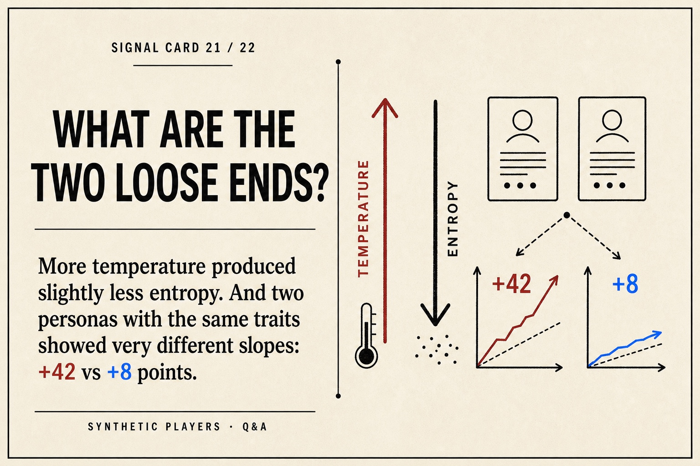
If there's a follow-up paper in here, where is it?
Two candidates stand out, both with complete, replayable data already in the archive: the opponent-contingent exploitability suite, and the cross-vendor word-versus-payoff dissociation (with the balanced-payoff cell as the missing experiment a follow-up would add). The registered Phase 6 replication — the properly powered re-test of incentive response — remains the committed next step.
{kind=link}
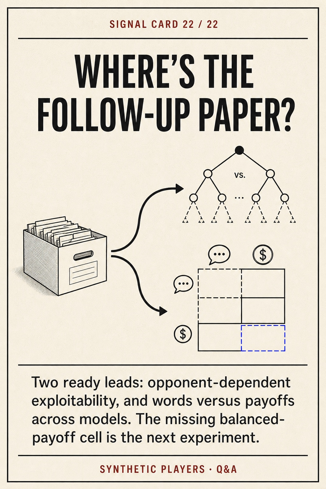